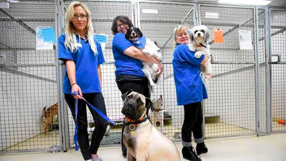
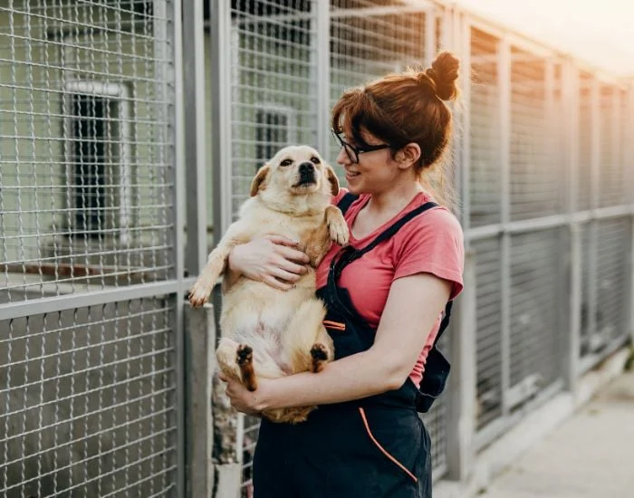

Ne bazăm pe voluntari cu inimă mare, care ne ajută să salvăm, îngrijim și găsim familii iubitoare pentru animalele fără stăpân. Dacă vrei să faci o diferență reală, poți deveni voluntar al organizației noastre!
Ce poți face ca voluntar:
-> Îngrijirea animalelor la adăpost: hrănire, curățenie, joacă și socializare.
-> Participarea la evenimente și campanii de adopție.
-> Promovarea animalelor disponibile pentru adopție pe rețelele sociale.


De ce să te implici:
-> Vei ajuta direct animale care au nevoie de sprijin.
-> Vei învăța mai multe despre îngrijirea și comportamentul animalelor.
-> Vei face parte dintr-o comunitate pasionată și implicată. Cum poți deveni voluntar: